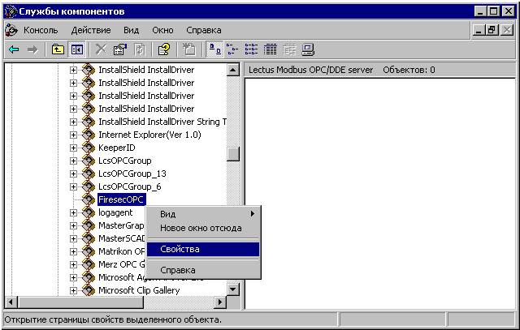
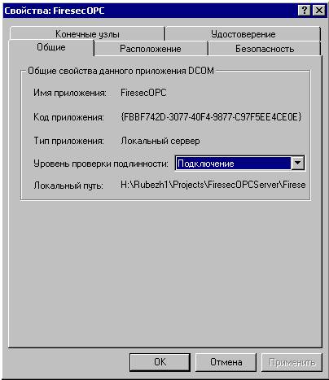
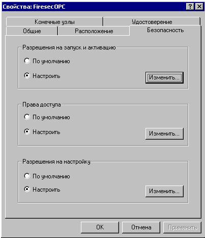
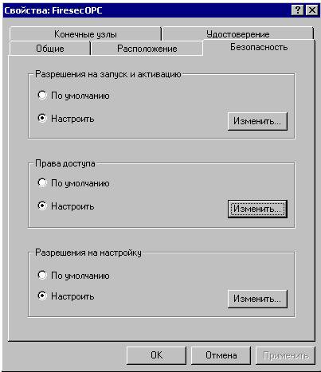
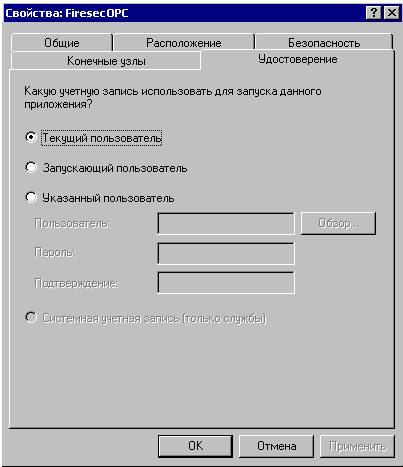

Настройка DCOM для
Windows XP SP2, Windows 2003 SP1
Внимание! В ОС Windows XP / 2003 может быть включен "Брандмауэр Windows" ("Windows Firewall"). Для работы по DCOM его необходимо выключить или настроить для работы с соответствующим сервером оборудования. Описание настройки брандмауэра выходит за рамки данной документации.
- Из меню "Пуск" ("Start") выбрать
"Выполнить" ("Run").

- Ввести "dcomcnfg" и нажать "OK".

- Выбрать "Корень консоли"\"Службы
компонентов\Компьютеры\Мой компьютер\Настройка DCOM" ("Consol
Root"\"Component Services\Computers\My Computer\DCOM
config"), нажать правую кнопку мыши и выбрать "Свойства"
("Properties") так как показано на рисунке:

- Выбрать закладку "Свойства по умолчанию"
("Default Properties") и установить параметры, указанные на
рисунке:

- Выбрать закладку "Безопасность COM"
("COM Security"). В группе "Права доступа"
("Access Permissions") нажать кнопку "Изменить
ограничения" ("Edit Limits"):

- Разрешить "Локальный доступ" ("Local
Access"), "Удаленный доступ" ("Remote Access")
для пользователей: "Анонимный вход" ("Anonymous Logon"),
"Все" ("Everyone"), "Интерактивные"
("Interactive"), "Сеть" ("Network") и
"System":

- В группе "Права доступа" ("Access
Permissions") нажать кнопку "Изменить настройки по
умолчанию" ("Edit Default"):

- Разрешить "Локальный доступ" ("Local
Access"), "Удаленный доступ" ("Remote Access")
для пользователей: "Анонимный вход" ("Anonymous
Logon"), "Все" ("Everyone"),
"Интерактивные" ("Interactive"), "Сеть"
("Network") и "System":

- В группе "Разрешение на запуск и активацию"
("Launch and Activation Permissions") нажать кнопку
"Изменить ограничения" ("Edit Limits"):

- Разрешить "Локальный запуск" ("Local
Launch"), "Удаленный запуск" ("Remote Launch"),
"Локальная активация" ("Local Activation"),
"Удаленная активация" ("Remote Activation") для
пользователей: "Анонимный вход" ("Anonymous Logon"),
"Все" ("Everyone"), "Интерактивные"
("Interactive"), "Сеть" ("Network") и
"System":

- В группе "Разрешение на запуск и активацию"
("Launch and Activation Permissions") нажать кнопку
"Изменить настройки по умолчанию" ("Edit Default"):

- Разрешить "Локальный запуск" ("Local
Launch"), "Удаленный запуск" ("Remote Launch"),
"Локальная активация" ("Local Activation"),
"Удаленная активация" ("Remote Activation") для
пользователей: "Анонимный вход" ("Anonymous Logon"),
"Все" ("Everyone"), "Интерактивные"
("Interactive"), "Сеть" ("Network") и
"System":

- На дереве "Корень консоли" ("Consol
Root") выделить OPC сервер "Службы компонентов\Компьютеры\Мой
компьютер\Настройка DCOM\FiresecOPC" ("Component
Services\Computers\My Computer\DCOM config\FiresecOPC"), нажать
правую кнопку мыши и выбрать "Свойства" ("Properties")
так как показано на рисунке:

- Выбрать закладку "Общие"
("General") и установить параметры, указанные на рисунке:

- Перейти на закладку "Безопасность"
("Security"). В группе "Разрешения на запуск и
активацию" ("Launch and Activation Permissions") нажать
кнопку "Изменить" ("Edit").

- Разрешить "Локальный запуск" ("Local
Launch"), "Удаленный запуск" ("Remote Launch"),
"Локальная активация" ("Local Activation"),
"Удаленная активация" ("Remote Activation") для
пользователей: "Все" ("Everyone"),
"Интерактивные" ("Interactive"), "Сеть"
("Network") и "System":

- В группе "Права доступа" ("Access
Permissions") нажать кнопку "Изменить" ("Edit").

- Разрешить "Локальный доступ" ("Local
Access"), "Удаленный доступ" ("Remote Access")
для пользователей: "Все" ("Everyone"),
"Интерактивные" ("Interactive"), "Сеть"
("Network") и "System":

- Перейти на закладку "Удостоверение"
("Identity"). Установить запуск сервера от имени "Текущий
пользователь" ("The interactive user") или, если он
запускается как сервис, "Системная учетная запись" ("The
system account").

- На дереве "Корень консоли" ("Consol
Root") выделить "OpcEnum" "Службы компонентов\Компьютеры\Мой
компьютер\Настройка DCOM\Firesec OPC"
("Component Services\Computers\My Computer\DCOM
config\OpcEnum"), нажать правую кнопку мыши и выбрать
"Свойства" ("Properties") так как показано на рисунке:

- Настроить свойства "OpcEnum" аналогично
свойствам OPC сервера.
Настройка
предотвращения выполнения данных (Data Execution Prevention)
Предотвращение выполнения данных (DEP) это набор аппаратных и программных технологий, которые выполняют дополнительную проверку памяти для защиты компьютера от повреждения вирусами и при других угрозах безопасности.
- Из меню "Пуск" ("Start") выбрать
"Мой компьютер" ("My computer"), нажать правую кнопку
мыши и выбрать "Свойства" ("Properties") так как
показано на рисунке:

- Перейти на закладку "Дополнительно"
("Advanced"). В группе "Быстродействие"
("Performance") нажать кнопку "Параметры"
("Settings").

- Выбрать закладку "Предотвращение выполнения
данных" ("Data Execution Prevention") и установить
параметры, указанные на рисунке:

Настройка локальной
политики безопасности (Local Security Policy)
Если компьютер является членом рабочей группы, а не домена, то следующие шаги необходимы для установки соединения. Имейте в виду, что эти настройки могут снизить безопасность вашей системы - обратитесь к сетевому администратору, если у вас есть какие-либо проблемы.
- Из меню "Пуск" ("Start") выбрать
"Панель управления" ("Control panel").

- Выбрать "Администрирование"
("Administrative Tools").

- Выбрать "Локальная политика безопасности"
("Local Security Policy").

- Выбрать "Параметры
безопасности"\"Локальные политики"\"Параметры
безопасности" ("Security Settings"\"Local
Policies"\"Security Options"). Нажать правую кнопку мыши на
"DCOM: Ограничения компьютера на доступ в синтаксисе SDDL"
("DCOM: Machine Access Restrictions…") и выбрать
"Свойства" ("Properties")

- Нажать кнопку "Изменить безопасность"
("Edit Security").

- Разрешить "Локальный доступ" ("Local
Access"), "Удаленный доступ" ("Remote Access")
для пользователей: "Все" ("Everyone"),
"Интерактивные" ("Interactive"), "Сеть" ("Network")
и "System":

- Нажать правую кнопку мыши на "DCOM: Ограничения
компьютера на запуск в синтаксисе SDDL" ("DCOM: Machine Launch
Restrictions…") и выбрать "Свойства"
("Properties")

- Нажать кнопку "Изменить безопасность"
("Edit Security").

- Разрешить "Локальный запуск" ("Local
Launch"), "Удаленный запуск" ("Remote Launch"),
"Локальная активация" ("Local Activation"),
"Удаленная активация" ("Remote Activation") для
пользователей: "Все" ("Everyone"),
"Интерактивные" ("Interactive"), "Сеть"
("Network") и "System":

- Нажать правую кнопку мыши на "Сетевой доступ:
разрешить применение разрешений для всех к анонимным пользователям"
("Network access: Let Everyone permissions apply to anonymous
users") и выбрать "Свойства" ("Properties")

- Выбрать "Включить" ("Enabled").

- Нажать правую кнопку мыши на "Сетевой доступ:
модель совместного доступа и безопасности для локальных учетных
записей" ("Network access: Sharing and security model for local
accounts") и выбрать "Свойства" ("Properties")

- Выбрать "Обычная - локальные пользователи
удостоверяются как они сами" ("Classic – local users
authenticate as themselves").

Теперь компьютер настроен для взаимодействия через DCOM.
P.S. DCOM имеет ограничения для подключений при взаимодействии компьютеров в домене и рабочей группе. Подключения через DCOM с вышеприведенными настройки могут работать, но, в зависимости от индивидуальных настроек сетей, может потребоваться настройка дополнительных параметров.